from to offset delta refsys x/y
x 1 72 -180 5 WGS 84 [x]
y 1 36 90 -5 WGS 84 [y]Растровый анализ
Основы геоинформатики. Лекция 6
Самсонов Тимофей Евгеньевич
7 марта 2025 г.
Растровая геометрия
Растровая геометрия определяется физическим расположением узлов в пространстве. Распространены следующие виды геометрий:
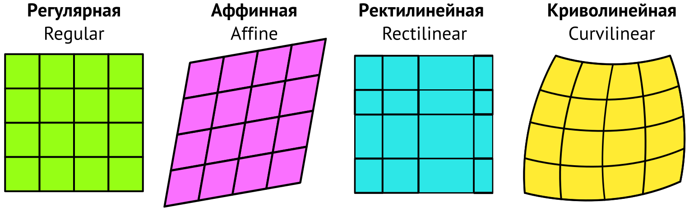
Хранение данных
Значения растра хранятся в виде матрицы вне зависимости от геометрии растра.
Измерения растра
Измерения растра задают отображение данных на геометрию.
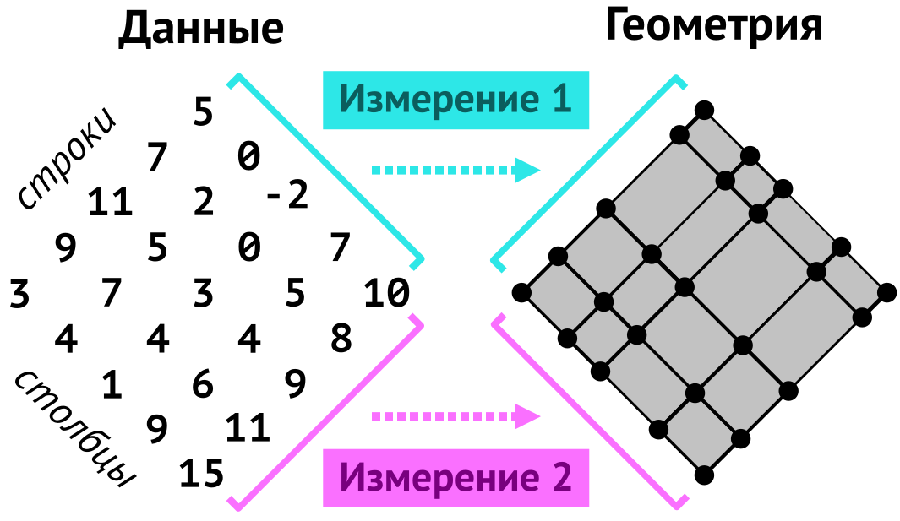
X и Y
В большинстве случаев измерения 1 и 2 носят названия X и Y, но для аффинных и криволинейных растров они достаточно условны.
Куб данных
Растры, в которых 3 и более измерений, называются растровыми кубами данных.
Измерения растра
Измерения растра задают отображение данных на геометрию.
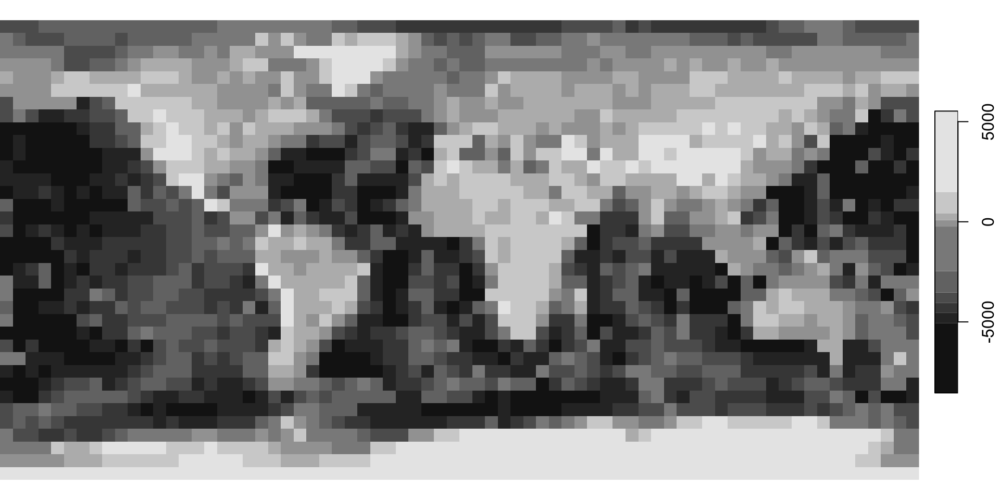
Изменение проекции
Изменение проекции растра возможно двумя путями
Трансформация (transform)
Трансформирует координаты узлов в указанную проекцию. Матрица значений остаётся прежней, однако геометрия становится криволинейной.
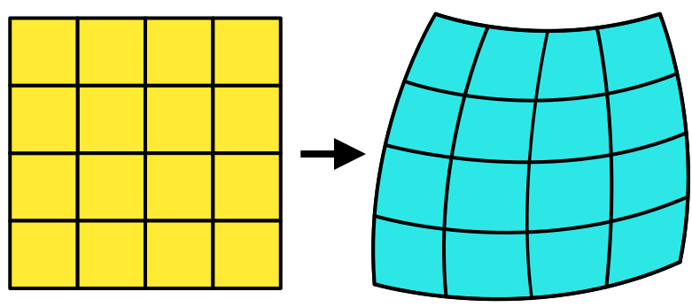
Деформация (warp)
Создает новую регулярную геометрию растра в указанной проекции. Матрица значений пересчитывается, поскольку местоположение узлов изменяется.
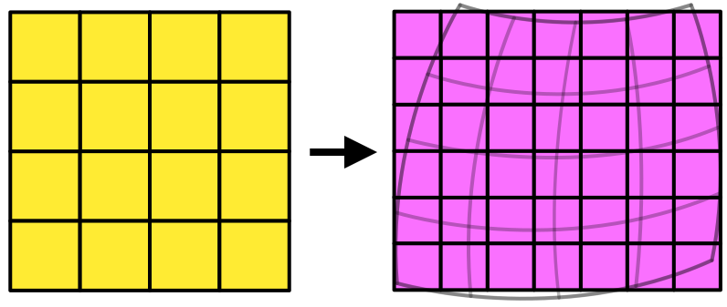
Трансформация
Трансформация приводит к созданию криволинейного растра.
from to refsys values x/y
x 1 72 +proj=eck4 [72x36] -16679857,...,16679857 [x]
y 1 36 +proj=eck4 [72x36] -8446752,...,8446752 [y]
curvilinear grid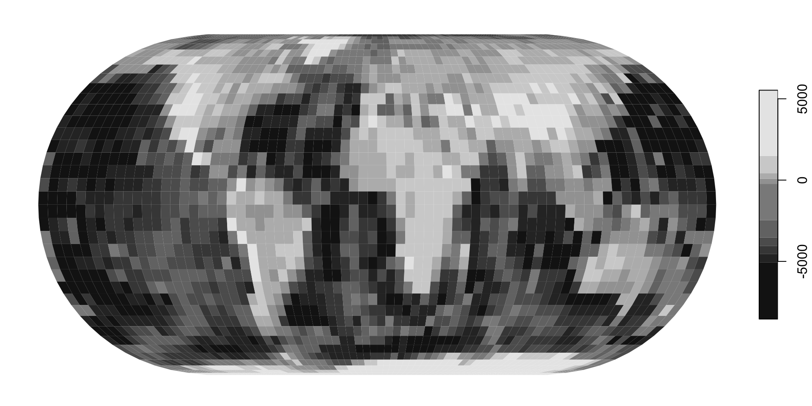
Деформация
Деформация обычно осуществляется на регулярный растр.
from to offset delta refsys point x/y
x 1 77 -16892421 438764 +proj=eck4 +lon_0=0 +x_0=... FALSE [x]
y 1 39 8460601 -433877 +proj=eck4 +lon_0=0 +x_0=... FALSE [y]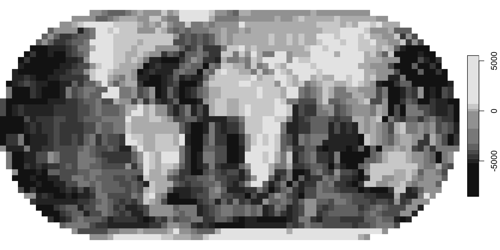
Передискретизация
Передискретизация — изменение пространственного положения узлов растра. Требует пересчета матрицы его значений.
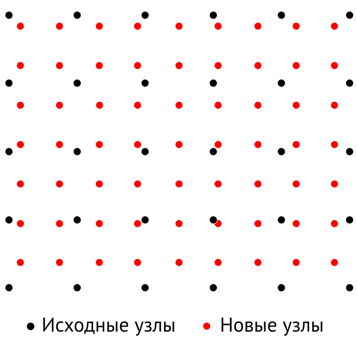
Примеры использования
Изменение разрешения
Переход к более низкому разрешению позволяет уменьшить объем и детализацию данных.
Изменение проекции
При деформации узлы новой сетки проецируются в исходную проекцию и определяются их значения.
Передискретизация
Метод ближайшего соседа — функция покрытия, при которой берётся значение ближайшего узла растра.
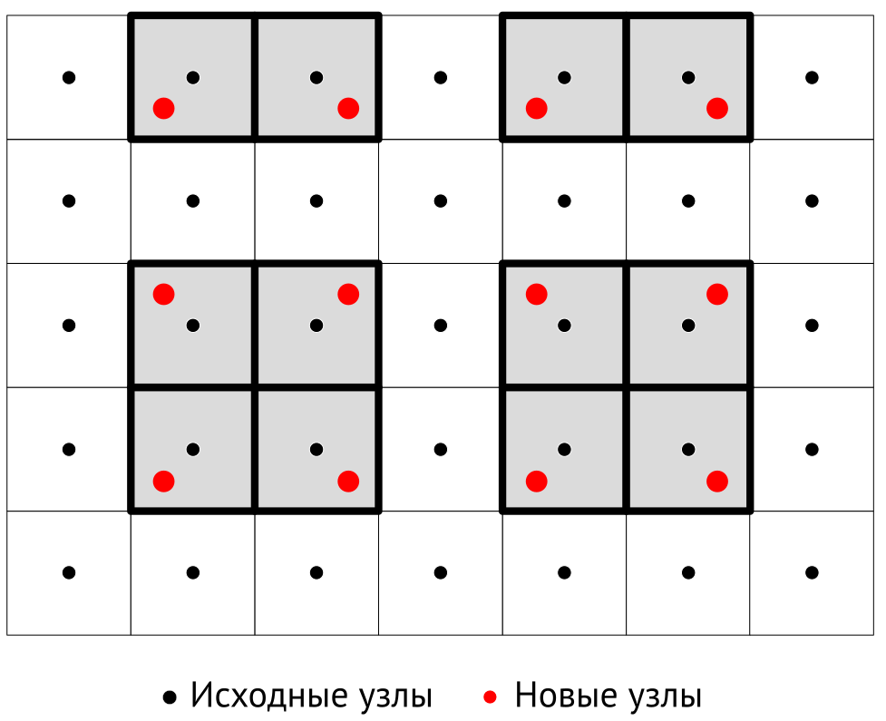
Применение
Метод ближайшего соседа используется для категориальных растров, которые хранят данные в номинальных и порядковых шкалах. Например, генезис четвертичных отложений.
Передискретизация
Билинейный метод — функция покрытия, при которой значение получается билинейной интерполяцией внутри исходной ячейки.
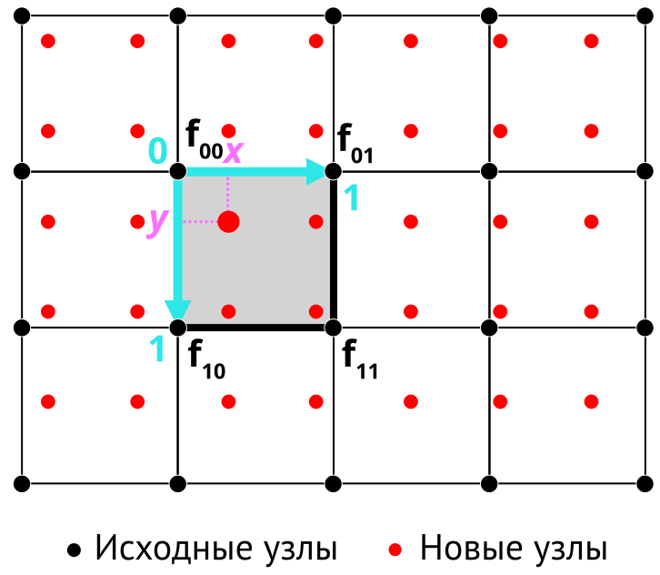
\[f(x, y) = r_{00} + r_{01}x + r_{10}y + r_{11}xy\]
\[\begin{cases} r_{00} = f_{00},\\ r_{01} = f_{01} - f_{00},\\ r_{10} = f_{10} - f_{00},\\ r_{11} = f_{00} + f_{11} - f_{01} - f_{10}. \end{cases}\]
Координаты \(x\) и \(y\) меняются в диапазоне от \(0\) до \(1\) в пределах ячейки.
Растровая алгебра
Локальные операции производят вычисления в каждом узле по отдельности.
Примеры
На основе растров температур и осадков вычислить индекс засушливости.
Классифицировать растр углов наклона.
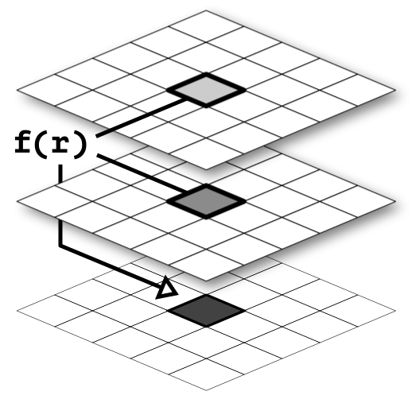
Растровая алгебра
Пример локальной операции — вычисление мощности оледенения.
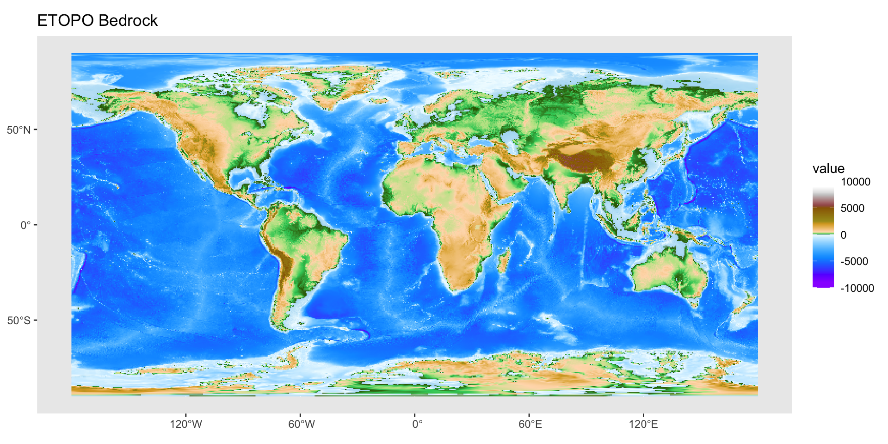
Растровая алгебра
Пример локальной операции — вычисление мощности оледенения.
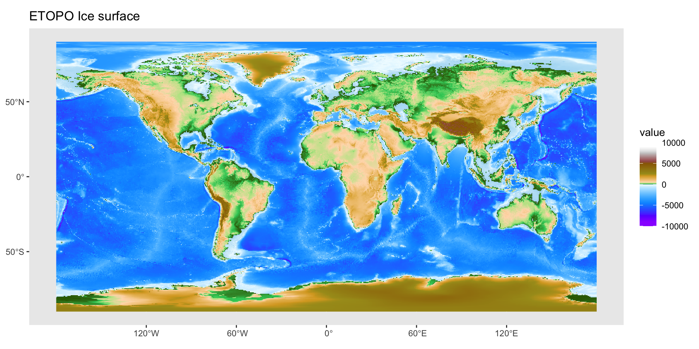
Растровая алгебра
Пример локальной операции — вычисление мощности оледенения.
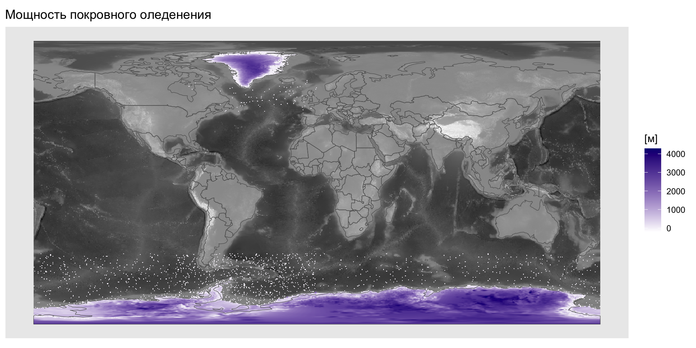
Растровая алгебра
Фокальные операции производят вычисления на основе значений из окрестности каждого узла.
Примеры
Выполнить фильтрацию (сглаживание) цифровой модели рельефа.
Обнаружить границы (резкие перепады яркости) на космическом снимке.
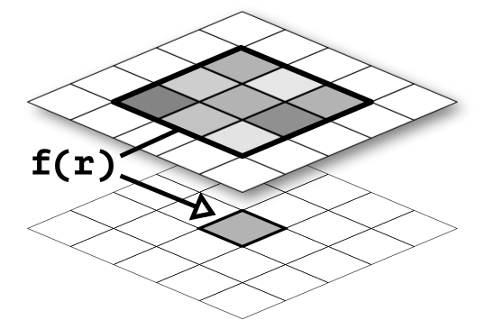
Растровая алгебра
Размеры и форма окрестностей могут различаться.
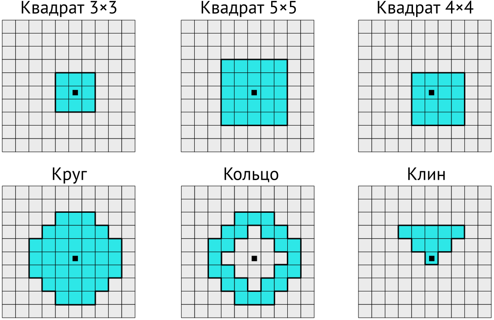
Свёртка
Свёртка — фокальный оператор, при котором берется сумма произведений значения растра и плавающего окна.
Для пикселя с индексами \((3,2)\) и окна \(3\times3\) будет равно:
\[ r'_{32} = w_{00} \cdot r_{21} + w_{01} \cdot r_{22} + w_{02} \cdot r_{23} \\ + w_{10} \cdot r_{31} + w_{11} \cdot r_{32} + w_{12} \cdot r_{33} \\ + w_{20} \cdot r_{41} + w_{21} \cdot r_{42} + w_{22} \cdot r_{43} \]
Для произвольного \((i,j)\):
\[ r'_{ij} = \sum_{k=0}^2 \sum_{m=0}^2 w_{km}\cdot r_{i+k-1,j+m-1} \]
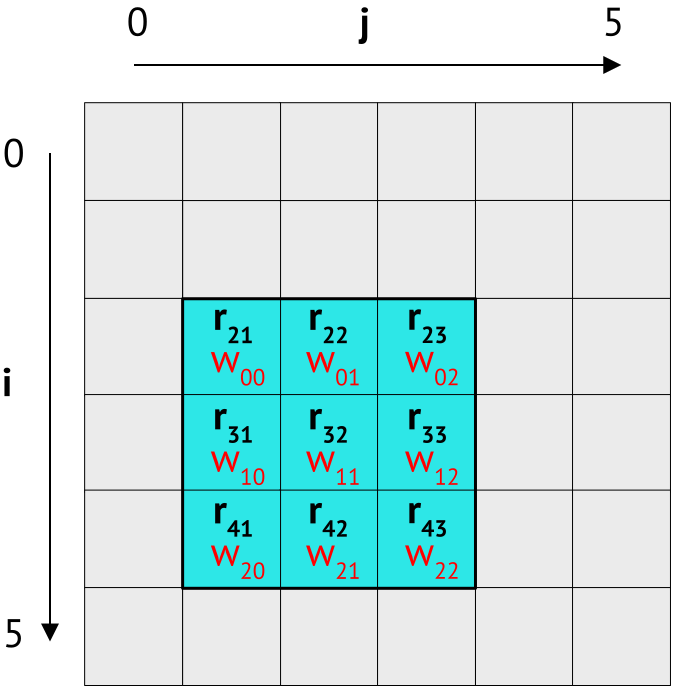
Растровая алгебра
Пример фокальной операции — сглаживание растра методом среднего значения. Получается свёрткой с матрицей \(n \times n\), где каждый элемент равен \(w_{km} = 1/n^2\):
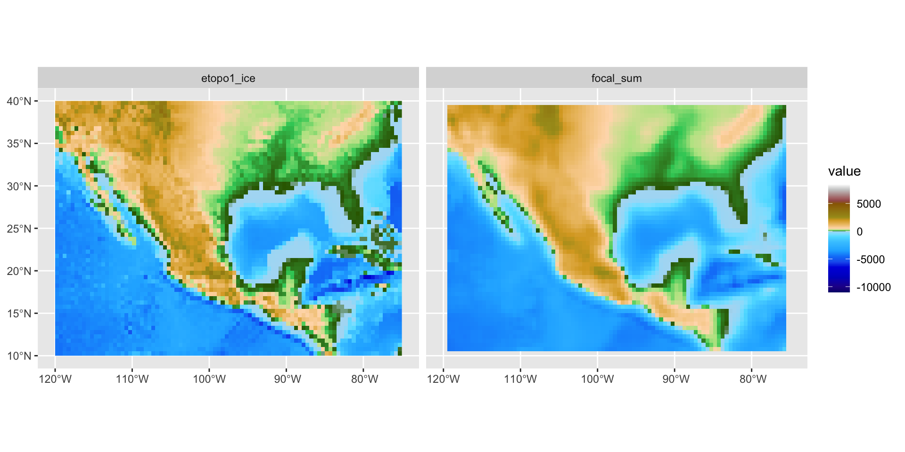
Растровая алгебра
Существуют фокальные операции с нефиксированной (растущей) окрестностью.
Евклидово распределение
Евклидово распределение (Euclidean allocation) относит каждый пиксел растра к ближайшему по расстоянию объекту. Полученный объект является растровой диаграммой Вороного.

Растровая алгебра
Евклидово расстояние (Euclidean distance) создает растр, в узлах которого хранится расстояние до ближайшего объекта.
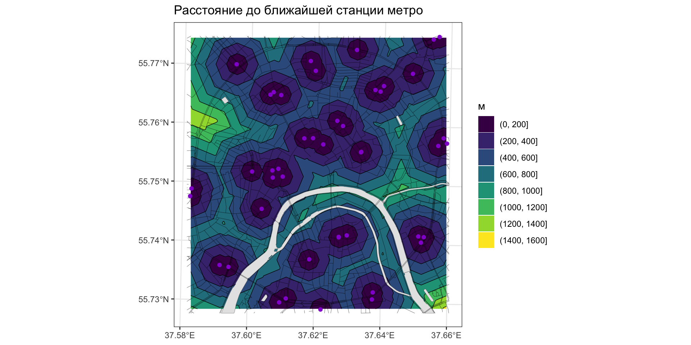
Растровая алгебра
Зональные операции производят агрегирование данных одного растра в пределах зон, определяемых другим растром или векторным набором данных.
Примеры
Определить наиболее распространенный тип почв в пределах каждого ландшафта.
Вычислить средний угол наклона для каждого водосборного бассейна.
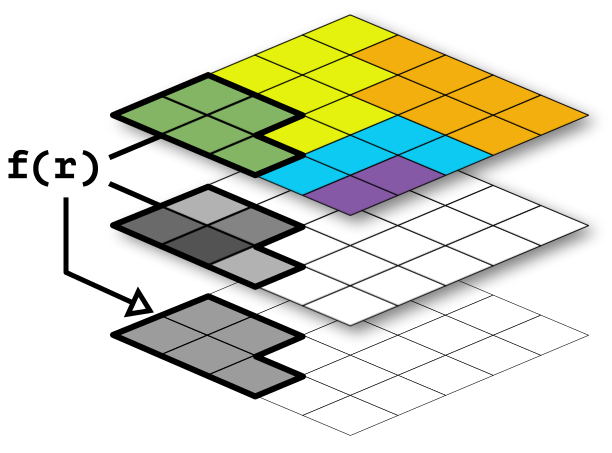
Растровая алгебра
Пример зональной операции — построение климатограммы.
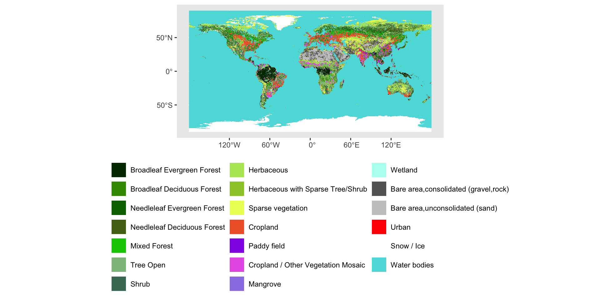
Типы земельного покрова
Растровая алгебра
Пример зональной операции — построение климатограммы.
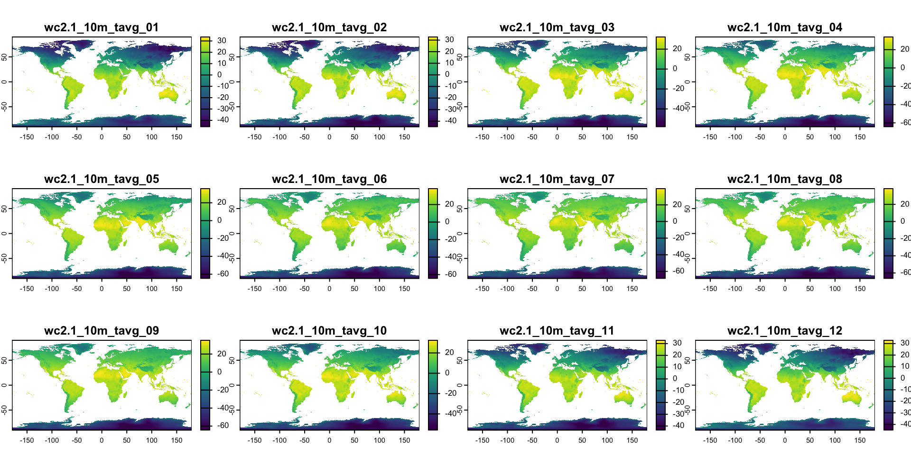
Среднемесячная температура
Растровая алгебра
Пример зональной операции — построение климатограммы.
# A tibble: 20 × 3
cover month tavg
<chr> <ord> <dbl>
1 Broadleaf Evergreen Forest Jan 22.5
2 Broadleaf Evergreen Forest Feb 23.1
3 Broadleaf Evergreen Forest Mar 24.0
4 Broadleaf Evergreen Forest Apr 24.7
5 Broadleaf Evergreen Forest May 24.9
6 Broadleaf Evergreen Forest Jun 24.7
7 Broadleaf Evergreen Forest Jul 24.5
8 Broadleaf Evergreen Forest Aug 24.6
9 Broadleaf Evergreen Forest Sep 24.6
10 Broadleaf Evergreen Forest Oct 24.3
11 Broadleaf Evergreen Forest Nov 23.5
12 Broadleaf Evergreen Forest Dec 22.7
13 Broadleaf Deciduous Forest Jan -7.22
14 Broadleaf Deciduous Forest Feb -5.11
15 Broadleaf Deciduous Forest Mar 0.246
16 Broadleaf Deciduous Forest Apr 7.19
17 Broadleaf Deciduous Forest May 13.1
18 Broadleaf Deciduous Forest Jun 17.6
19 Broadleaf Deciduous Forest Jul 19.6
20 Broadleaf Deciduous Forest Aug 18.4 Растровая алгебра
Пример зональной операции — построение климатограммы.
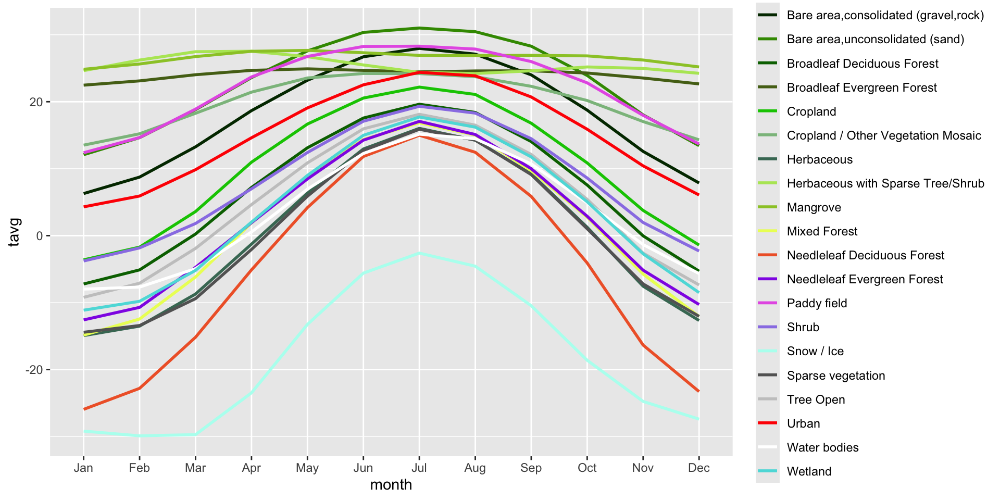
Растровая алгебра
Глобальные операции производят вычисления над всеми узлами растра сразу.
Примеры
Вычислить среднее значение по растру плотности населения.
Определить наиболее распространенный тип растительности для всей территории.
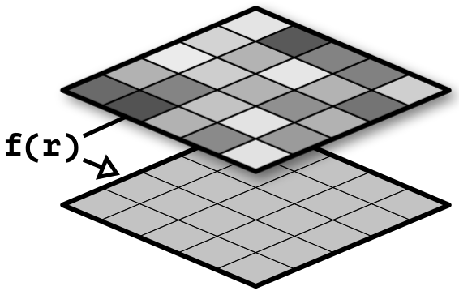
Растровая алгебра
Растровый оверлей — частный случай локальной операции, при котором вычисляется линейная комбинация (сумма, среднее и т.д.) значений из нескольких растров.
\[ R = w_1 r_1 + w_2 r_2 + ...w_n r_n = \sum_{i=1}^n w_i r_i \]
Взвешенный оверлей
Растровый оверлей называют взвешенным, если коэффициенты в линейной комбинации представляют собой веса значений
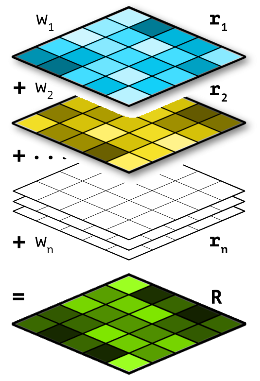
Взвешенный оверлей
Пример взвешенного оверлея — выбор территорий, обладающей оптимальной совокупностью признаков:
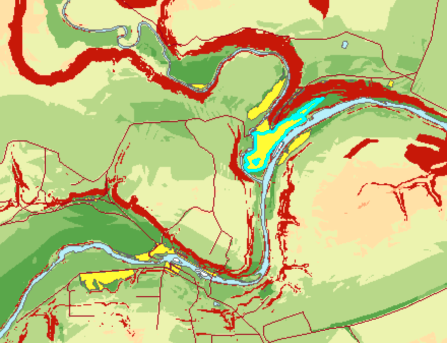
Взвешенный оверлей
Сатино: углы наклона
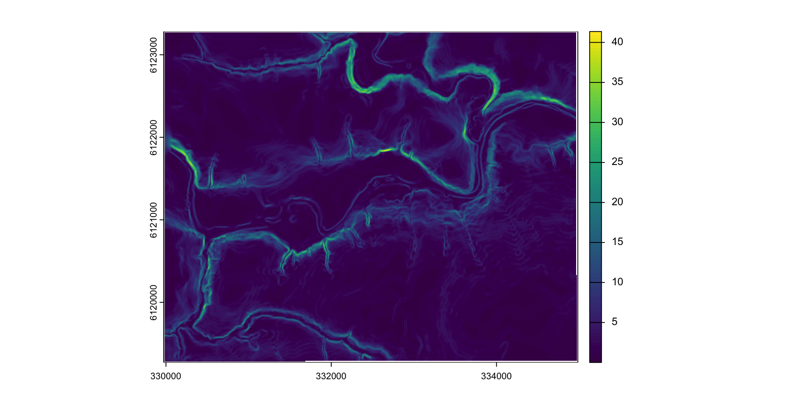
Взвешенный оверлей
Углы не более 3 градусов
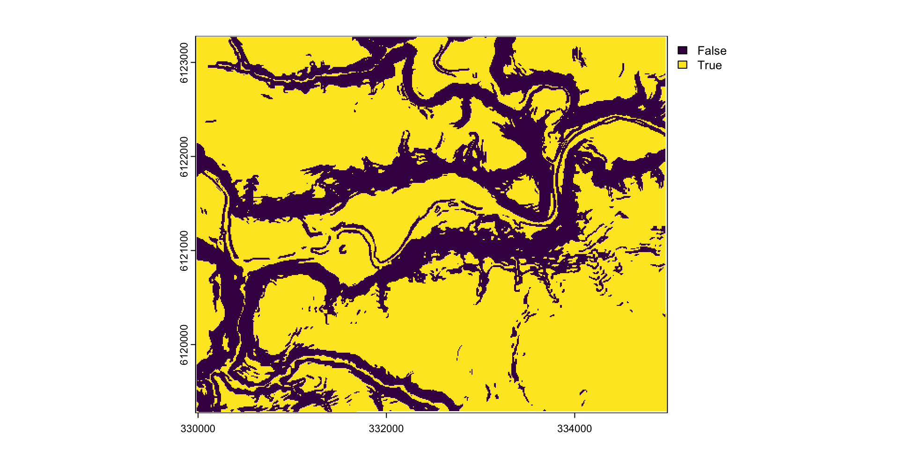
Взвешенный оверлей
Расстояния до рек
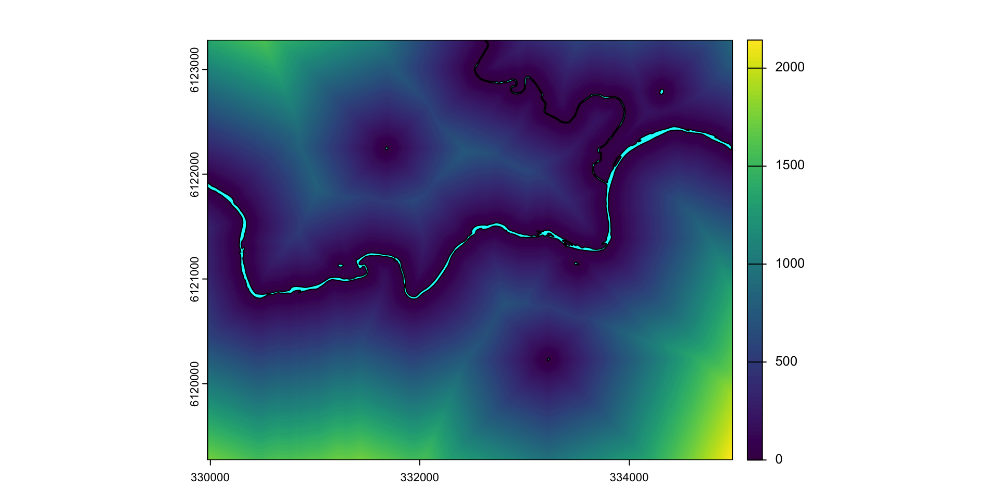
Взвешенный оверлей
Расстояния до рек < 300 м
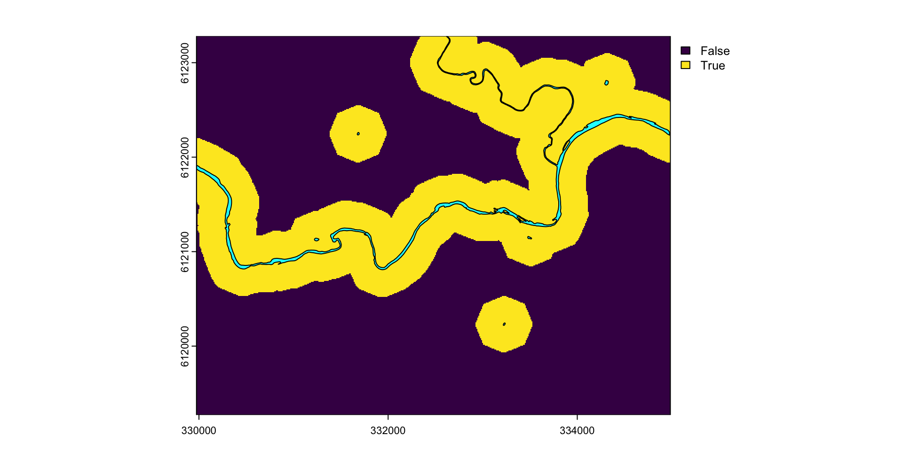
Взвешенный оверлей
Расстояния до дорог
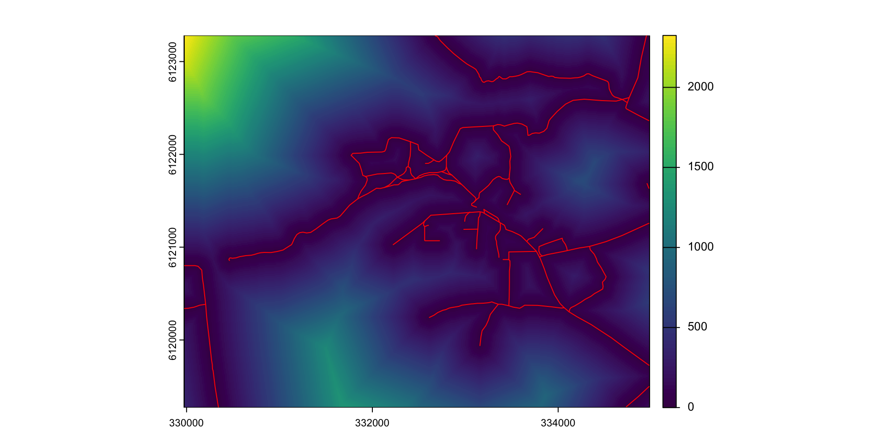
Взвешенный оверлей
Расстояния до дорог < 100 м
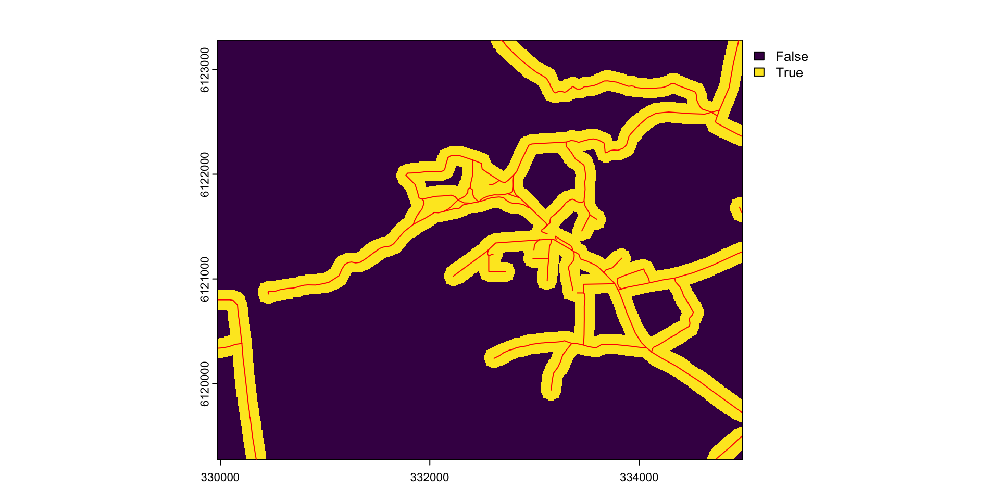
Взвешенный оверлей
Лес
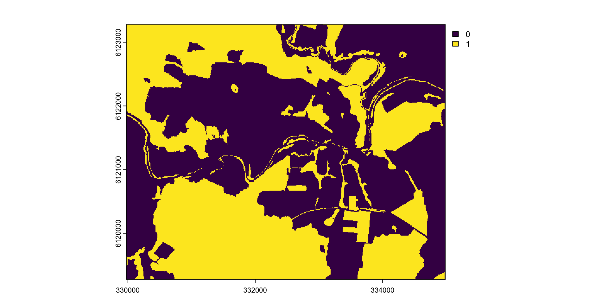
Взвешенный оверлей
Сочетание факторов
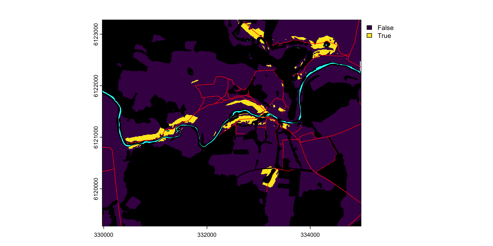
Извлечение данных
Данные из растра можно извлекать по указанным векторным объектам с помощью функции покрытия. Например, в точке:
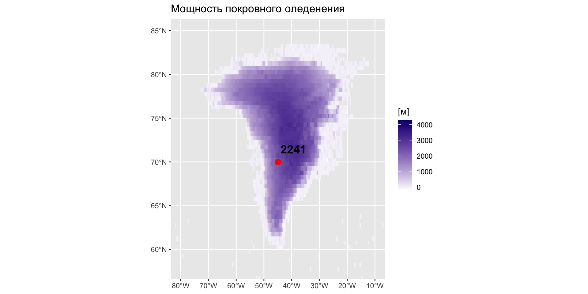
Мощность покровного оледенения в точке
Извлечение данных
Аналогично выполняется построение профиля, но данные извлекаются из всех ячеек, находящихся на линии профиля.
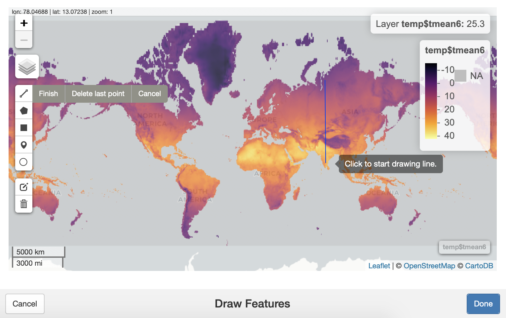
Извлечение данных
Аналогично выполняется построение профиля, но данные извлекаются из всех ячеек, находящихся на линии профиля.
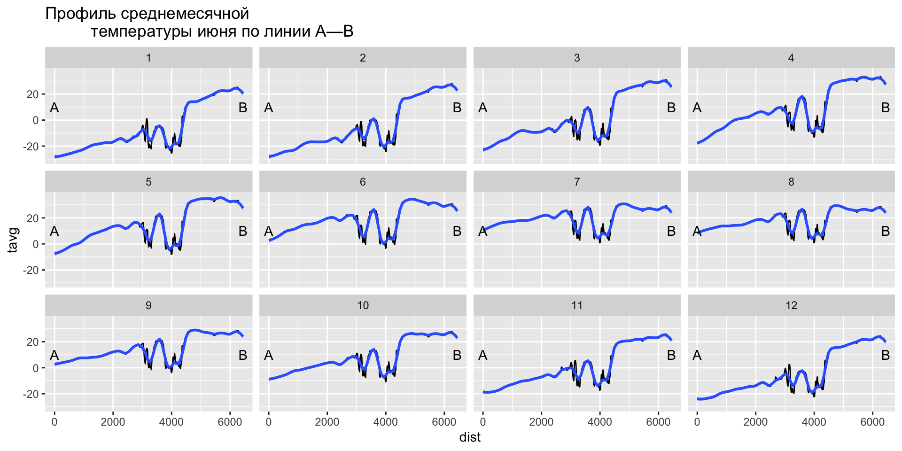
Словарик
Геометрия растра
Измерение растра
Передискретизация
Ближайший сосед
Билинейная интерполяция
Локальный анализ
Фокальный анализ
Зональный анализ
Глобальный анализ
Окрестность
Свертка
Raster geometry
Raster dimension
Resampling
Nearest neighbor
Bilinear interpolation
Local analysis
Focal analysis
Zonal analysis
Global analysis
Neighborhood
Convolution
Библиография
Самсонов Т. Е. Основы геоинформатики: курс лекций